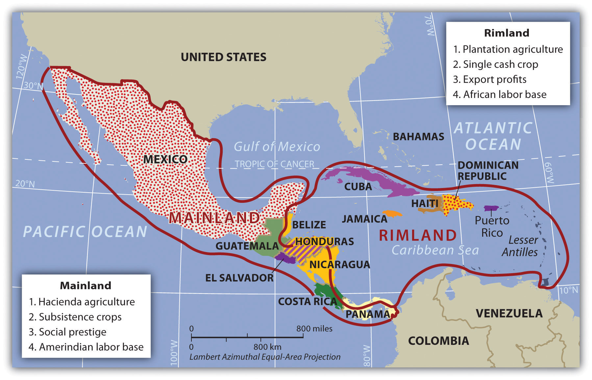
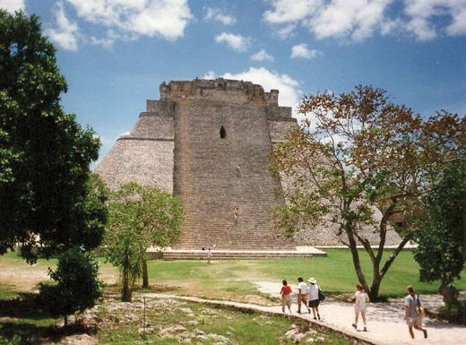
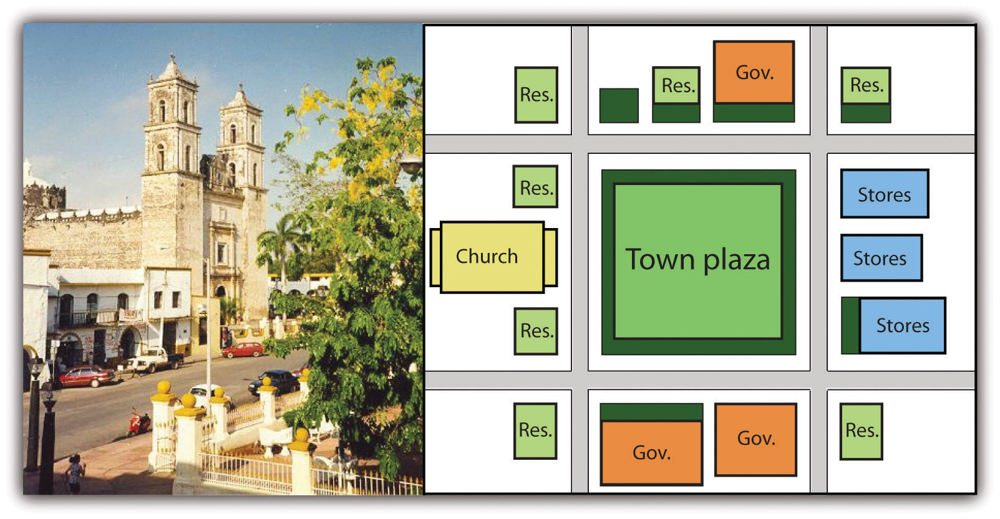
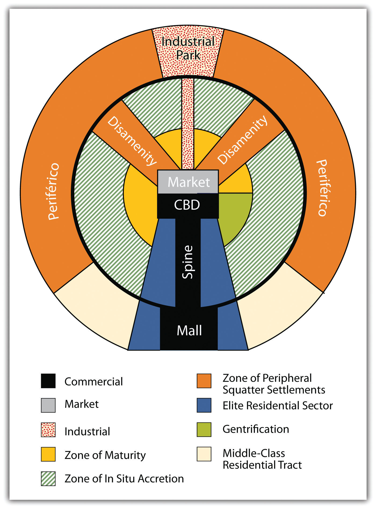

Middle America has various types of physical landscapes, including volcanic islands and mountain ranges. Tectonic action at the edge of the Caribbean Plate has brought about volcanic activity, creating many of the islands of the region as volcanoes rose above the ocean surface. The island of Montserrat is one such example. The volcano on this island has continued to erupt in recent years, showering the island with dust and ash and making habitation difficult. Many of the other low-lying islands, such as the Bahamas, were formed by coral reefs rising above the ocean surface. Tectonic plate activity not only has created volcanic islands but also is a constant source of earthquakes that continue to be a problem for the Caribbean community.
The republics of Central America extend from Mexico to Colombia and form the final connection between North America and South America. The Isthmus of Panama, the narrowest point between the Caribbean Sea and the Pacific Ocean, serves as a land bridge between the continents. The backbone of Central America is mountainous, with many volcanoes located within its ranges. Much of the Caribbean and all of Central America are located south of the Tropic of Cancer and are dominated by tropical type A climates. The mountainous areas have varied climates, with cooler climates located at higher elevations. Mexico has extensive mountainous areas with two main ranges in the north and highlands in the south. There are no landlocked countries in this realm, and coastal areas have been exploited for fishing and tourism development.
Using a regional approach to the geography of a realm helps us compare and contrast a place’s features and characteristics. Location and the physical differences explain the division of Middle America into two geographic areas according to occupational activities and colonial dynamics: the rimlandThe Caribbean islands and the Caribbean coastal areas of Central America., which includes the Caribbean islands and the Caribbean coastal areas of Central America, and the mainlandThe interior portions of Mexico and Central America., which includes the interior of Mexico and Central America.
Colonialism thrived in the rimland because it consists mainly of islands and coastal areas that were accessible to European ships. Ships could easily sail into a cove or bay to make port and claim the island for their home country. After an island or coastal area was claimed, there was unimpeded transformation of the area through plantationAgricultural unit focusing on a single cash crop with seasonal high-labor needs and usually operated by individuals not directly working the land. The plantation was common in the rimland of Middle America and more common during the era of slavery. agriculture. On a plantation, local individuals were subjugated as servants or slaves. The land was planted with a single crop—usually sugarcane, tobacco, cotton, or fruit—grown for export profits. Most of these crops were not native to the Americas but were brought in during colonial times. European diseases killed vast numbers of local Amerindian laborers, so slaves were brought from Africa to do the work. Plantation agriculture in the rimland was successful because of the import of technology, slave labor, and raw materials, as well as the export of the harvest to Europe for profit.
Plantation agriculture changed the rimland. The local groups were diminished because of disease and colonial subjugation, and by the 1800s most of the population was of African descent. Native food crops for consumption gave way to cash crops for export. Marginal lands were plowed up and placed into the plantation system. The labor was usually seasonal: there was a high demand for labor at peak planting and harvest times. Plantations were generally owned by wealthy Europeans who may or may not have actually lived there.
The mainland, consisting of Mexico and the interior of Central America, diverged from the rimland in terms of both colonial dynamics and agricultural production. The interior lacked the easy access to the sea that the rimland enjoyed. As a result, the haciendaLarge land holding established by Spanish colonialists for social prestige and a comfortable lifestyle. In Mexico, haciendas allowed local Amerindian residents to live on the premises and work for the Spanish land owner. style of land use developed. This Spanish innovation was aimed at land acquisition for social prestige and a comfortable lifestyle. Export profits were not the driving force behind the operation, though they may have existed. The indigenous workers, who were poorly paid if at all, were allowed to live on the haciendas, working their own plots for subsistence. African slaves were not prominent in the mainland.
In the mainland, European colonialists would enter an area and stake claims to large portions of the land, often as much as thousands or even in the millions of acres. Haciendas would eventually become the main landholding structure in the mainland of Mexico and many other regions of Middle America. In the hacienda system, the Amerindian people lost ownership of the land to the European colonial masters. Land ownership or the control of land has been a common point of conflict throughout the Americas where land transferred from a local indigenous ownership to a colonial European ownership.
Figure 5.2 Mainland and Rimland Characteristics of Middle America Based on Colonial-Era Economic Activities
The rimland was more accessible to European ships, and the mainland was more isolated from European activity.
The plantation and hacienda eras are in the past. The abolition of slavery in the later 1800s and the cultural revolutions that occurred on the mainland challenged the plantation and hacienda systems and brought about land reform. Plantations were transformed into either multiple private plots or large corporate farms. The hacienda system was broken up, and most of the hacienda land was given back to the people, often in the form of an ejidosLand system in Mexico in which the community owns the land but individuals can gain profit from it by sharing resources. system, in which the community owns the land but individuals can profit from it by sharing its resources. The ejidos system has created its own set of problems, and many of the communally owned lands are being transferred to private owners.
The agricultural systems changed Middle America by altering both the systems of land use and the ethnicity of the population. The Caribbean Basin changed in ethnicity from being entirely Amerindian, to being dominated by European colonizers, to having an African majority population. The mainland experienced the mixing of European culture with the Amerindian culture to form various types of mestizoPeople of mixed ethnicity, including European and Amerindian ethnicity. groups with Hispanic, Latino, or Chicano identities.
Though the southern region of the Americas has commonly been referred to as “Latin America,” this is a misnomer because Latin has never been the lingua franca of any of the countries in the Americas. What, then, is the connection between the southern region of the Americas and Latin? To understand this connection, the reader needs to bring to mind the dominant languages as well as the origin of the colonizers of the region called “Latin America.” Keep in mind that the name of a given country does not always reflect its lingua franca. For example, people in Mexico do not speak a language called “Mexican”; they speak Spanish. Likewise, Brazilians do not speak “Brazilian”; they speak Portuguese.
European colonialism had an immense effect on the rest of the world. Among other things, colonialism diffused the European languages and the Christian religion. Latin Mass has been a tradition in the Roman Catholic Church. Consider the Latin-based Romance language group and how European colonialism altered language and religion in the Americas. The Romance languages of Spanish and Portuguese are now the most widely used languages in Middle and South America, respectively. This is precisely why the term Latin America is not technically an appropriate name for this region, even though the name is widely used. Middle America is a more accurate term for the region between the United States and South America, and South America is the appropriate name for the southern continent in spite of the connection to Latin-based languages.
European colonialism impacted Middle America in more ways than language and religion. Before Christopher Columbus arrived from Europe, the Americas did not have animals such as horses, donkeys, sheep, chickens, and domesticated cattle. This meant there were no large draft animals for plowing fields or carrying heavy burdens. The concept of the wheel, which was so prominent in Europe, was not found in use in the Americas. Food crops were also different: the potato was an American food crop, as were corn, squash, beans, chili peppers, and tobacco. Europeans brought other food crops—either from Europe itself or from its colonies—such as coffee, wheat, barley, rice, citrus fruits, and sugarcane. Besides food crops, building methods, agricultural practices, and even diseases were exchanged.
The Spanish invasion of Middle America following Columbus had devastating consequences for the indigenous populations. It has been estimated that fifteen to twenty million people lived in Middle America when the Europeans arrived, but after a century of European colonialism, only about 2.5 million remained. Few of the indigenous peoples—such as the Arawak and the Carib on the islands of the Caribbean and the Maya and Aztec on the mainland—had immunities to European diseases such as measles, mumps, smallpox, and influenza. Through warfare, disease, and enslavement, the local populations were decimated. Only a small number of people still claim Amerindian heritage in the Caribbean Basin, and some argue that these few are not indigenous to the Caribbean but are descendants of slaves brought from South America by European colonialists.
Columbus landed with his three ships on the island of Hispaniola in 1492. Hispaniola is now divided into the countries of Haiti and the Dominican Republic. With the advantage of metal armor, weapons, and other advanced technology, the Spanish invaders quickly dominated the local people. Since Europe was going through a period of competition, warfare, and technological advancements, the same mind-set carried forward to the New World. Indigenous people were most often made servants of the Europeans, and resistance resulted in conflict, war, and often death. The Spanish soldiers, explorers, or adventurers called conquistadors were looking for profits and quick gain and ardently sought gold, silver, and precious gems. This quest for gain pitted the European invaders against the local groups. The Roman Catholic religion was brought over from Europe and at times was zealously pushed on the local “heathens” with a “repent or perish” method of conversion.
Many of the Caribbean islands have declared independence, but some remain crown colonies of their European colonizers with varying degrees of autonomy. Mexico achieved independence from Spain by 1821, and most Central American republics also gained independence in the 1820s. In 1823, the United States implemented the Monroe Doctrine, designed to deter the former European colonial powers from engaging in continued political activity in the Americas. US intervention has continued in various places in spite of the reduction in European activity in the region. In 1898, the United States engaged Spain in the Spanish-American War, in which Spain lost its colonies of Cuba, Puerto Rico, and others to the United States. Puerto Rico continues to be under US jurisdiction and is not an independent country.
Though the region of Mexico has been inhabited for thousands of years, one of the earliest cultures to develop into a civilization with large cities was the Olmec, which was believed to be the precursor to the later Mayan Empire. The Olmec flourished in the south-central regions of Mexico from 1200 BCE to about 400 BCE. Anthropologists call this region of Mexico and northern Central America MesoamericaThe term that anthropologists use for the region of southern Mexico and northern Central America where the early Olmec, Mayan, and Aztec civilizations existed.. It is considered to be the region’s cultural hearthRegion or area where an early human civilization began. because it was home to early human civilizations. The Maya established a vast civilization after the Olmec, and Mayan stone structures remain as major tourist attractions. The classical era of the Mayan civilization lasted from 300 to 900 CE and was centered in the Yucatán Peninsula region of Mexico, Belize, and Central America. Guatemala was once a large part of this vast empire, and Mayan ruins are found as far south as Honduras. During the classical era, the Maya built some of the most magnificent cities and stone pyramids in the Western Hemisphere. The city-states of the empire functioned through a sophisticated religious hierarchy. The Mayan civilization made advancements in mathematics, astronomy, engineering, and architecture. They developed an accurate calendar based on the seasons and the solar system. The extent of their immense knowledge is still being discovered. The descendants of the Maya people still exist today, but their empire does not.
Figure 5.3 Mayan Site of Uxmal in the Yucatán Region of Mexico
The classical Mayan era lasted from 300 to 900 CE. Many magnificent cities were built with stone and remain today as major tourist attractions.
Source: Photo by R. Berglee.
The Toltec, who controlled central Mexico briefly, came to power after the classical Mayan era. They also took control of portions of the old Mayan Empire from the north. The Aztec federation replaced the Toltec and Maya as the dominant civilization in southern Mexico. The Aztec, who expanded outward from their base in central Mexico, built the largest and greatest city in the Americas of the time, Tenochtitlán, with an estimated population of one hundred thousand. Tenochtitlán was located at the present site of Mexico City, and it was from there that the Aztec expanded into the south and east to create an expansive empire. The Aztec federation was a regional power that subjugated other groups and extracted taxes and tributes from them. Though they borrowed ideas and innovations from earlier groups such as the Maya, they made great strides in agriculture and urban development. The Aztec rose to dominance in the fourteenth century and were still in power when the Europeans arrived.
After the voyages of Columbus, the Spanish conquistadors came to the New World in search of gold, riches, and profits, bringing their Roman Catholic religion with them. Zealous church members sought to convert the “heathens” to their religion. One such conquistador was Hernán Cortés, who, with his 508 soldiers, landed on the shores of the Yucatán in 1519. They made their way west toward the Aztec Empire. The wealth and power of the Aztecs attracted conquistadors such as Cortés, whose goal was to conquer. Even with metal armor, steel swords, sixteen horses, and a few cannons, Cortés and his men did not challenge the Aztecs directly. The Aztec leader Montezuma II originally thought Cortés and his men were legendary “White Gods” returning to recover the empire. Cortés defeated the Aztecs by uniting the people that the Aztecs had subjugated and joining with them to fight the Aztecs. The Spanish conquest of the Aztec federation was complete by 1521.
As mentioned, the Spanish invasion of Middle America had devastating consequences for the indigenous populations. It is estimated that there were between fifteen and twenty-five million Amerindians in Middle America before the Europeans arrived. After a century of European colonialism, there were only about 2.5 million left.“Module 01: Demographic Catastrophe—What Happened to the Native Population after 1492?,” http://www.dhr.history.vt.edu/modules/us/mod01_pop/context.html. Cortés defeated the Amerindian people by killing off the learned classes of the religious clergy, priestly orders, and those in authority. The local peasants and workers survived. The Spanish destroyed the knowledge base of the Maya and Aztec people. Their knowledge of astronomy, their advanced calendar, and their engineering technology were lost. Only through anthropology, archaeology, and the relearning of the culture can we fully understand the expanse of these early empires. The local Amerindian descendants of the Maya and the Aztec still live in the region, and there are dozens of other Amerindian groups in Mexico with their own languages, histories, and cultures.
As the Spanish established urban centers in the New World, they structured each town after the Spanish pattern, with a plaza in the center. Around the plaza on one side was the church (Roman Catholic, of course). On the other sides of the plaza were government offices and stores. Residential homes filled in around them. This pattern can still be seen in almost all the cities built by the Spanish in Middle and South America. The Catholic Church not only was located in the center of town but also was a supreme cultural force shaping and molding the Amerindian societies conquered by the Spanish.
In Spain, the cultural norm was to develop urban centers wherever administration or military support was needed. Spanish colonizers followed a similar pattern in laying out the new urban centers in their colonies. Extending out from the city center (where the town plaza, government buildings, and church were located) was a commercial district that was the backbone of this model. Expanding out on each side of the spine was a wealthy residential district for the upper social classes, complete with office complexes, shopping districts, and upper-scale markets.
Figure 5.4 Catholic Cathedral across from a Plaza in the Yucatán City of Valladolid (left); Model of a Spanish Colonial Urban Pattern (right)
The Spanish colonial urban pattern had a plaza in the center of the city with government buildings around the square and a Catholic church on one side.
Source: Photo by R. Berglee.
Surrounding the central business district (CBD) and the spine of most cities in Middle and South America are concentric zones of residential districts for the lower, working, and middle classes and the poor. The first zone, the zone of maturity, has well-established middle-class residential neighborhoods with city services. The second concentric zone, the zone of transition (in situ accretion), has poorer working-class districts mixed with areas with makeshift housing and without city services. The outer zone, the zone of periphery, is where the expansion of the city occurs, with makeshift housing and squatter settlements. This zone has little or no city services and functions on an informal economy. This outer zone often branches into the city, with slums known as favelasTerm used to describe a slum in parts of South America, particularly Brazil. or barriosTerm used to describe a slum in the northern parts of South America and Middle America. that provide the working poor access to the city without its benefits. Impoverished immigrants that arrive in the city from the rural areas often end up in the city’s outer periphery to eke out a living in some of the worst living conditions in the world.
Cities in this Spanish model grow by having the outer ring progress to the point where eventually solid construction takes hold and city services are extended to accommodate the residents. When this ring reaches maturity, a new ring of squatter settlements emerges to form a new outer ring of the city. The development dynamic is repeated, and the city continues to expand outward. The urban centers of Middle and South America are expanding at rapid rates. It is difficult to provide public services to the outer limits of many of the cities. The barrios or favelas become isolated communities, often complete with crime bosses and gang activities that replace municipal security.
Figure 5.5 Spanish-American City Structure According to the Ford-Griffin Model
Identify the following key places on a map: